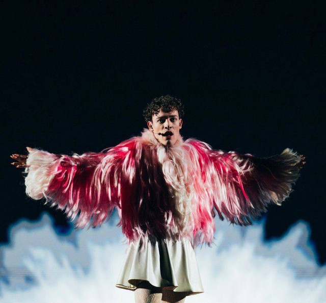
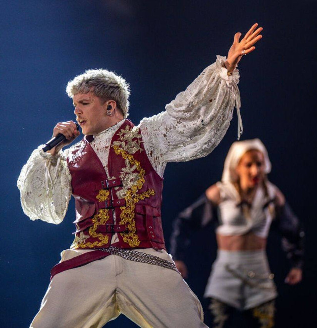
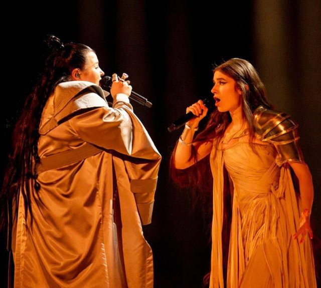

Швейцарія
У фіналі конкурсу "Євробачення-2024", який пройшов у Мальмі, Швейцарія здобула перемогу завдяки виступу свого представника, співака Nemo. Його композиція The Code набрала 591 бал, що зробило його переможцем цього престижного музичного змагання. Перемога швейцарця Nemo стала знаковою подією не лише для світу музики, а й для обговорення правового стану небінарних осіб. Інтерес до цієї теми піднявся після його перемоги на "Євробаченні", що призвело до обговорення цієї проблеми у суспільстві. Перемога Швейцарії на "Євробаченні-2024" стала предметом обговорення не лише у музичному середовищі, а й у соціально-політичному контексті, відкриваючи діалог про права небінарних людей та стереотипи у суспільстві. Перемога Nemo стала символом змін та важливим кроком у розумінні та визнанні різноманітності серед людей, викликаючи глибокі дискусії та перегляд поглядів на гендерні ролі.

Виступ Швейцарії
Хорватія
На конкурсі "Євробачення-2024" від Хорватії виступив виконавець Baby Lasagna з піснею "Rim Tim Tagi Dim". Його вихід у фінал конкурсу викликав величезний інтерес у глядачів та букмекерів, які пророкували йому перемогу. Однак, незважаючи на великі надії, Хорватія посіла друге місце у конкурсі, поступившись перемогою Швейцарії, Хорватія набрала 547 балів. Таким чином Хорватія показала сильний виступ на "Євробаченні-2024", але залишилася на другому місці в цьому престижному музичному змаганні.

Висуп Хорватії
Україна
У фіналі конкурсу "Євробачення-2024", Україну представляв дует Alyona Alyona та Jerry Heil з піснею "Teresa & Maria". Україна успішно пройшла відбірковий тур і пробилася у фінал, де виборола третє місце із загальним результатом 453. Молдавське журі надало найвищу підтримку Україні під час конкурсу та принесло їм максимальну кількість балів. Втім, українська пісня викликала величезний емоційний відгук, оскільки їхній музичний виступ був присвячений жахливим подіям в Україні, що дозволило привернути увагу до проблем своєї країни. Україна продемонструвала потужний виступ на "Євробаченні-2024", викликавши інтерес та підтримку у глядачів та журі, зрештою посівши третє місце у конкурсі.

Виступ України